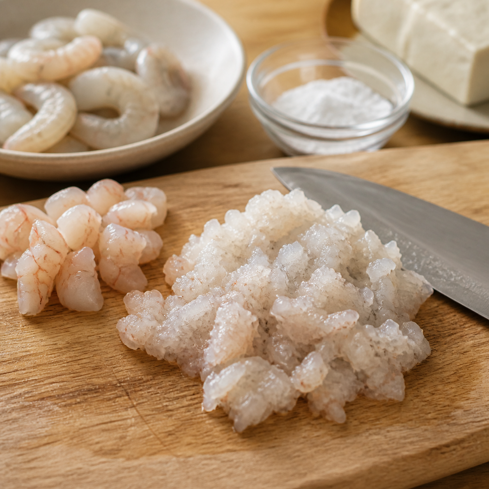
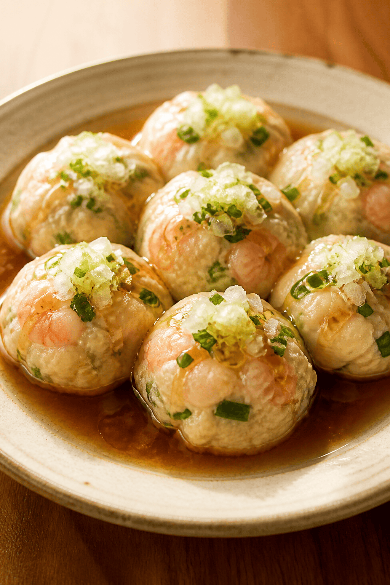

蒸して軽やか、最後にジュッ
ふわっと海老の豆腐まんじゅう
夜遅めでも罪悪感なく満たしたい日ぷりっとした海老を叩いて粘りを出す。
豆腐と野菜でふわっと軽くまとめる。
熱々の香味油をかけた瞬間、中華料理店っぽくなります。
時間
25分
難易度
★★☆☆☆
カロリー
360 kcal
P:
28g
たんぱく質
F:
18g
脂質
C:
20g
炭水化物
01
食べる理由
ハマる人
- 重すぎないけど満足感のあるおかずを探してる人
- 海老のプリッと食感をちゃんと楽しみたい人
おすすめのシーン
- 夜遅めでも罪悪感なく食べたいとき
- ちょっと丁寧なご飯を作りたい日
- お酒と合わせてゆっくり食べたい夜
03
材料
男性1人分
メイン
- エビ（むき身）
- 150g
- 豆腐
- 100g
- 片栗粉
- 大さじ1
野菜
- 白ネギ
- 1/2本
- タカナ
- 30g
- タンゲン菜
- 30g
タレ
- 醤油
- 大さじ1
- めんつゆ
- 大さじ1
仕上げ
- サラダ油
- 小さじ1
- ごま油
- 小さじ1
04
作り方
05
まとめ
- 海老は叩いて粘りを出す。
- 豆腐で軽さを出す。
- 最後の香味油で店っぽさを足す。